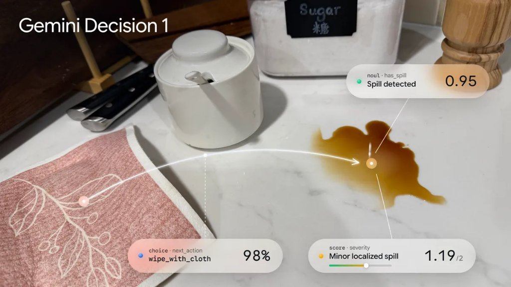

From SayPlan through RT-1, RT-2, OXE, Diffusion Policy, ACT, Octo, OpenVLA, Helix, GR00T N1, SmolVLA, FAST, the π series, Astra, and Decision Model
Technical Essay · Reading Robot Learning Through Architecture and Time · November 2026
Just a few years ago, telling a robot what to do in plain language felt like science fiction. Today, demo videos show robots effortlessly understanding human speech and clearing away cups. Yet pull back the curtain, and two robots moving the exact same cup may run on completely different principles. Some models merely recite the task sequence and step aside, while others directly compute and output the 3D coordinates where the fingertips should go. What the model solves itself versus what it delegates to the low-level controller is worlds apart.
This essay weaves the studies that transformed robot learning over recent years into a single chronology around one guiding question: “Who decides the numbers that move the robot, based on what, and how often?” It follows the arc from symbolic planning to policies that learn actions directly, then through temporal structure and multimodal distributions, dual-rate architectures, frequency compression, reinforcement learning, and finally how a general-purpose VLM came to output action coordinates directly.
0. A Map Across Four Tracks
Reading Figure 0 horizontally reveals the chronological timeline from 2022 to 2026, while reading it vertically exposes the four technical tracks that drove robot learning forward. While Parts 1–4 unfold the story chronologically, these four tracks represent the four paths pursued by research groups driven by distinct core questions.
| Track | Core Question | Representative Lineage |
|---|---|---|
| Track 1 · Symbolic Planning · General-Purpose VLM | How far can language and visual intelligence alone control a robot without robot training data? | SayCan → SayPlan → System 2 → GPT-6 Astra → Decision Model |
| Track 2 · tokens VLA · Open Data | If we treat actions like language tokenss and gather enough data, will it yield a general-purpose policies? | RT-1 → RT-2 → OXE/RT-X → Octo·OpenVLA → FAST |
| Track 3 · Action Chunks · Continuous Distributions | How do we break error compounding and the multimodal averaging trap to achieve smooth motion? | Diffusion Policy·ACT → π0 → Helix·GR00T N1·SmolVLA |
| Track 4 · Generalization · RL · Context Conditioning | What else is needed to handle unfamiliar homes, failure data, and mixed execution strategies? | π0.5 → π*0.6(RECAP) → π0.7 |
Keeping these four tracks in mind as you enter Part 1 makes it far clearer why each paper appeared when it did to target the limitations of earlier tracks.
1. The Vast Gap Between Words and Motors
Place a robot in front of a cluttered desk and tell it:
“Clean up the desk before guests arrive. Put the clean cups on the shelf, and throw away the trash.”
For a human, this takes three seconds; turning it into motor currents on a robot arm spans a vast chasm. First, the robot must unpack the abstract meaning of 'clean up' and tell cups apart from trash. After locating the shelf, it must decide at what angle to extend its fingers to grasp a cup and plan the trajectory to lift and move it. If the cup slips mid-transfer, it must look again at that instant and adjust its grip.
Historically, researchers have engaged in an ongoing tug-of-war over how much of this long chain to entrust to a learned model. Model outputs fall broadly into four layers:
| Output Layer | Example | What Remains for the Executor |
|---|---|---|
| Semantic subtask | Move the cup to the shelf | Everything from finding which cup it is to grasping and moving it |
| Skill call | pick(cup_3), place(shelf_2) |
Perception, path generation, and contact control inside the skill |
| Numerical action | End-effector position, pose,gripper target | IK, trajectory Tracking, low-level servo control |
| Execution program | observation-reading code that loops through approach, grasp, and retry | Code execution, sensors, andcontroller actuation |
The eye that picks out a cup and the hand skill that grasps it are completely different capabilities. So when evaluating any system, we must examine not only ‘whether it succeeded,’ but also what it takes as input, what it outputs, who executes it, and how often it checks the result again.
Let us formalize this relationship with notation. At time t, denote the observationas ot(camera images, It, joint state qt etc.), the user's instruction as ℓ, observation-action history as ht. Let a single-step numerical action be at, and over the next Hsteps, let the action chunkbe At.
Here, dis the action dimension chosen to match the robot control interface. Using only a single arm's end-effector motion and grippergives 7 dimensions, whereas including bimanual joint targets makes the dimensionality much larger. Even with the same 7 dimensions, whether they represent absolute pose or delta, and what rotation representation and reference coordinate frameare used, makes it a completely different language.
2. SayPlan: Handing the Baton to Language Models
Early LLM robotics researchers made a clear choice: hand the baton of ‘planning’ to large language models already steeped in common-sense knowledge, and leave the actual hands and feet to proven classical controllerand skills.
SayPlan, introduced in 2023, represents the pinnacle of this approach. When a building spans multiple floors and rooms, cramming all object information into the promptquickly causes the LLMto lose its way. SayPlan dumps a pre-built hierarchical 3D scene graph(building–floor–room–object) into JSON, and lets the LLMcall an API to search by collapsing and expanding only the nodes in relevant areas. Long-range navigation segments are connected by a path planner such as Dijkstra , and it self-corrects nonsensical task sequences based on feedback returned by the scene graph simulator. S01

| Planning Stage | Newly Checked Information | Output |
|---|---|---|
| Relevant Space Search | Collapsed graph, task instruction | Expand nodes containing kitchen & shelf |
| Task Planning | Revealed objects,state, and relations | Navigate, pick up cup, place on shelf |
| Plan Verification | Current graph stateand action preconditions | Flag out-of-order steps or missing conditions |
| Replanning | Verification feedback | Revised symbolic plan |
| Execution | Verified plan | Navigation and manipulation via a separate executor |
Thanks to this structure, logical errors like trying to put a cup into a closed fridge while skipping the door-opening step are caught at the graph verification stage.
However, limitations soon surfaced. Even a plan that passes perfectly on the graph runs into trouble when the robot hand actually approaches and the camera is occluded or the cup slips. To bridge the gap between symbolic planning and physical contact, what was needed was a direct vision-to-number policies.
3. RT-1: Breaking Skills Down to Numbers
In fact, rewinding the timeline, there was an experiment a year before SayPlan that dove straight down the opposite path: RT-1, released by Google Robotics in 2022.
RT-1's question was simple: “Instead of writing a separate controllerfor every task, why not feed massive amounts of demonstration data into one giant Transformer and turn it into a single language-conditioned policies?” Over 17 months, 13 robots quietly collected more than 130,000 episodes, eventually yielding a 35M model that combines EfficientNetand TokenLearner, Transformer. S03 S04

| Item | RT-1 |
|---|---|
| Input | Recent RGB images (6 frames), natural language instruction |
| Output | 7 arm axes + 3 base axes + 1 action mode axis |
| Action Representation | Numerical action variables: 256-bin discretization |
| Training Method | demonstration Action tokensclassification loss |
| Scale & Collection | ~35M parameters · 130k episodes (700+ instructions) · 13 robots / 17 months · 3Hz |
RT-1 reframed the problem: rather than directly regressingcontinuous real values, it sliced each action axis's range into 256 bins and turned it into a classification problem of predicting the bin index (token).
Once the predicted index is converted back to a float and passed to the controller, the robot moves one step . The camera then captures a new scene, and the model takes that scene to output the index for the next step.
RT-1 was monumental in solving numerous manipulation tasks at 3Hz in a closed loopusing only a language instruction. Yet it had a painful weakness: it lacked common-sense world knowledge. No matter how much you trained it to move cups, if you gave it a command outside its demonstration data—such as “bring something to drink to a sleepy person”—it froze on the spot.
4. RT-2: Bringing the Internet's Memory to Robot Fingertips
The solution was surprisingly close at hand: bring in a giant VLMthat already understands how the world works from reading vast web images and text, and simply slot the robot's action numbers into its vocabulary.
RT-2, introduced in 2023, bundled web vision-language tasks together with robot action data for joint Fine-Tuning(co-fine-tuning). Much like PaLI-X or PaLM-E—where a giant backbonelooks at images and questions to output text tokens—RT-2 trained it to emit 8 action values side by side (termination, 6-axis EEF delta, and 1gripper axis) as 8 action tokens. S05

The results were dramatic. In the robot demonstration data, the command “pick up the extinct animal toy” had never appeared—yet upon hearing it, RT-2 recalled the link between dinosaurs and extinction learned from the web and reached straight for the dinosaur plush. S06
At this point, the history of robot learning began to split Generalizationinto two kinds. Looking at new words or context to pick out ‘what to pick up’ is semantic generalization, whereas executing ‘new dexterity’under unfamiliar physical conditions is motor generalization. Web knowledge threw open the doors of semantic generalization, yet it did not freely grant new motor skills absent from the demonstration, such as high-speed mid-air catching.
5. OXE, Octo, OpenVLA: Opening Up Data and Code
The vision RT-2 demonstrated was captivating, but it sat behind a big-tech walled garden. An even bigger bottleneck was data. Whereas computer vision had ImageNet, robotics had only institution-specific robot arms, cameras, and coordinate framescattered across labs.
In October 2023, dozens of labs around the world joined forces to release Open X-Embodiment(OXE)and the RT-X models, turning the tables. When data from over 22 different robot types was unified into the RLDS format for training, behaviors a robot could never have learned from its own data alone were actually observed to undergo cross-robot (cross-embodiment transfer) from other robots' experience. S25


Once the massive floodgate of OXE burst open, in spring 2024, two landmark baselines emerged back-to-back from the open-source camp.
- Octo (2024.05): OXE , trained on 800k trajectory, was the first full-scale open-source diffusion-based generalist policies. It could snap in different cameras and joint spaces like modular blocks, and produced smooth actions with a diffusion action head. S26
- OpenVLA (2024.06): DINOv2and SigLIP visual features, feeding them into a Llama 2 -based 7B language model, and trained on OXE 970k demonstration, releasing its weights, code, and LoRA Fine-Tuning pipeline in full. S07 S08
Researchers could finally put their own robots under the scalpel when failures occurred—diagnosing whether the issue was data, coordinate normalization , or Fine-Tuning issues. Yet a fatal blind spot lurked inside the original OpenVLA. RGB Looking only at a single image and an instruction, it spat out a 7D action just one step at a time. It saw neither past observation history nor current joint state(proprioception).
Handed only a single still photo, it is hard to even tell whether the hand paused while approaching the cup or just dropped it and is pulling back. On top of that, real-world time keeps ticking while a 7B model computes its answer. Two 2023 papers that shattered this 1-step prediction bottleneck head-on now take center stage.
6. ACT and Diffusion Policy: Horizons and Distributions Together
In spring 2023, the robotics community simultaneously proved from two directions “why you must not predict one stepat a time”.
The first contender was Stanford's ACT(Action Chunking with Transformers, 2023.04). Imitation learning policiessnowballs errors if it predicts only a single next action at each step—even a 1mm slip shifts the next camera frame and compounds the drift. ACT, using the bimanual robot data-collection system ALOHA's demonstration, observed 4 camera feeds and a 14-DoF joint stateto predict, over the next Hsteps, a joint target matrix (H × 14) all at once in parallel. S09 S10
On top of this, ACT added a clever mechanism called temporal ensembling. At every timestep, it generates a fresh chunk, while for the same physical time t = 12, it vertically stacks the predictions made from multiple past timesteps (t = 10, 11, 12) and combines them with an exponential weights.
The second contender, published a month earlier, was Diffusion Policy(2023.03). Suppose you are approaching a cup and both paths—going around the left or right of an obstacle—are open. If you simply average these two trajectory, the robot hand slams straight into the middle of the obstacle. Diffusion Policy uses a conditional diffusion model(DDPM) to learn the action chunk, denote the multimodal distributions itself, and established a solution that uses receding-horizon control to execute only the front portion before observationagain. S24


ACT's temporal chunkingand Diffusion Policy's multimodal distributions generationcombined, and since then almost every modern VLA's action head has been built upon these two pillars.
7. Three Clocks: Physics, Policy, Generation
Once you start using chunks, saying “the robot runs at 50Hz” tells you almost nothing, because three distinct clocks tick at different speeds inside the system.
For example, suppose the robot consumes targets at f = 50Hz and the policiespredicts H = 50actions, meaning one chunkcovers 1 second into the future. If we execute only the first h = 10of them before capturing a new image and querying again, the policiesis invoked only once every 0.2 seconds (5Hz).
Then, with the arrival of generative models, a third clock entered the picture. If a Diffusion or Flow model, to craft a single chunk , internally runs K = 10integration/denoising steps, those are pure compute steps independent of physical time.
| Clock | Unit | Example |
|---|---|---|
| Physical Action Clock | Interval for sending one target value to the robot | 1 target every 20ms (50Hz) |
| policies Update Clock | New observation-based chunkre-sampling interval | Every 200ms, a new chunk (5Hz) |
| Internal Generation Clock | chunk decoding & integration steps (per generation) | 10 integration steps per call |
On top of that, if inference delay(latency) adds up to 0.3 seconds, the robot ends up executing an trajectoryplanned from an outdated view 0.3 seconds ago. Asynchronous execution can overlap compute and actuation to cut wait time, but it must be paired with techniques to smoothly stitch the already-elapsed segment with the new chunk.
Prediction Horizon and Execution Horizon
An interactive calculator to see how the three clocks interlock. Even if you change the generation iterations K, the physical prediction horizon stays the same.
K = 10 is the generative compute inside a single call. Call Latency 100ms fits within the nominal 200ms execution window.
In synchronous execution, wait time and latency add up, stretching the actual update period. Kcan be changed, yet the physical prediction horizon H/fstays the same.
8. System 2+1 and Lightweighting: Helix, GR00T N1, SmolVLA
The dilemma of the three mismatched clocks sparked architectural divergence in the early-2025 humanoid VLA race, because asking a heavy VLMto also handle 200Hz finger control was simply beyond what compute could keep up with.
- Figure Helix (2025.02): Split the brain clean in two. The scene-understanding and language-interpreting System 2(pretrained VLM) runs slowly at 7–9Hz, while—taking its latent representations to move the upper body and fingers— System 1(visuomotor policy) fires at 200Hz. That is where demos of two humanoidrobots collaborating by handing objects to each other came from. S27
- NVIDIA Isaac GR00T N1 (2025.03): System 2(VLM) + System 1(Diffusion Transformer) dual architecture as an open foundation model while expanding the data pyramid: from human and synthetic videos lacking action labels, using a latent action codebook and an inverse dynamics model(IDM), it extracted pseudo-actions for co-training. S28
- SmolVLA (2025.06): Conversely, Hugging Face's alternative asked, “Can't we run this without massive proprietary data and H100 clusters?” Trained solely on public LeRobot community data, it created a 450M ultra-lightweight flow-matching VLAand equipped it with asynchronous inferenceout of the box, achieving real-time control on a single consumer GPU. S29

9. FAST: Rewriting the Alphabet of Action
Meanwhile, VLM, denote the autoregressive grammar, the camp aiming to directly emit action chunk— was still blocked by the tokens length wall. H = 50, d = 14matrix alone has 700 numbers. A smooth 20ms-interval trajectoryhas nearly identical consecutive numbers, yet trying to decode it step-by-step as tokensmade the output far too long.
Released in January 2025, FAST (Frequency-space Action Sequence Tokenization) drew inspiration from JPEG image compression to overhaul the alphabet of action. By applying DCT(Discrete Cosine Transform) along the time axis to convert the trajectoryinto frequency components, followed by quantizationand BPE compression, packing it tightly into just 30–60 tokens. S11
inference time, the policiesproduces output in compressed tokens form — emitting just a few lets the inverse transform instantly unfold them into an H × d matrix. Through roughly 10× compression, it boosted training speed by up to 5× under comparable conditions. S12
10. π0: Sculpting Continuous Trajectories with Flow Matching
In October 2024, three months before FAST, Physical Intelligencereleased π0, which instead of discrete tokens opened a path in continuous space to sculpt the entire trajectory distribution. It deeply intertwines a 3B PaliGemma VLMwith a ~300M-parameter flow-matching action expertvia attention. S13
From random Gaussian noise εto the ground-truth action chunk A*, a straight path is set, and the
model vθis trained to predict at every internal time τ ∈ [0, 1]the target velocity field(A* − ε).
In real-world inference, starting from noiseand following the learned velocity fieldfor 10 steps (Euler integration) immediately yields a H = 50 -step smooth continuous action matrix in one shot.
Crucially, the internal integration axis τis unrelated to physical time t. Rather than the robot moving during the 10 integration steps, the entire 50-step future matrix simultaneously blooms from noiseinto trajectory.
11. π0.5: Leaving the Lab for Unfamiliar Homes
π0 showcased impressive dexterity folding laundry and clearing tables, yet the next question immediately followed: “What happens if you place a robot that excelled on a lab desk into a stranger’s kitchen for the very first time?”
In an unfamiliar home, lighting and cup shapes aren’t the only differences. Semantic judgment—figuring out which object belongs where in this particular house—becomes necessary alongside manual dexterity. Released in April 2025, π0.5 co-trained multi-robot action data, web vision-language data, and semantic subtask labels all in a single pot. S15 S16
pretrained, it rapidly absorbed knowledge using FAST discrete tokens, and in the post-training stage, it attached a continuous flow expert to preserve fingertip precision. inference time, the model first outputs a subtask as text—such as “move the cup to the shelf”—and conditions on it to generate a continuous action chunk. It was the moment semantic reasoning and motor control began interlocking at different cadences within a single model.
12. π*0.6 and RECAP: VLAs Learning from Failures and Corrections
However, approaches that only imitate demonstration data (Behavioral Cloning) faced a clear ceiling. Even when human teleoperation demonstrationlooked flawless, once run autonomously, the robot would make subtle mistakes and have no idea how to recover from them. Moreover, trying to collect only successful demonstrationpushed both speed and success rate up against a wall.
Released in November 2025, with π*0.6 and RECAP (RL with Experience and Corrections via Advantage-conditioned Policies)be Imitation learning's ceiling was broken through using reinforcement learning(RL). S30 Not only existing demonstrationbut also autonomous rollouts where the robot failed on its own, and human teleoperated intervention data were all collected, and a Value Function(value function) was used to compute each action's gain (advantage) and attach it as a binary tag.
policieswas not directly perturbed via policy gradient; instead, advantagewas fed in as a conditioning input during training, so at inference time, simply conditioning on “high advantage” draws out only the fastest, most error-free actions. As a result, on challenging tasks like operating an espresso machine or assembling factory boxes, throughput more than doubled while the failure rate dropped by more than half. S30
13. π0.7: Extracting Context from Noise
While π*0.6 solved RL by conditioning on ‘high vs. low probability of success,’ π0.7released in April 2026 (5B scale: Gemma3 4B VLM + MEM video history + 860M flow expert) expanded this idea into comprehensive Context Conditioning(multimodal context conditioning). S17 S18
Under the same “clear the cup” instruction, when fast demonstration, cautiously slow demonstration, and failed demonstrationare mixed together, it takes not only the task instruction, but also execution quality, speed strategy, control mode, and even an asynchronous world-model-supplied target state image (visual subgoal)—all as conditioning inputs.
| Execution | Observed Motion | When Mixed Without Labels | Attachable Context Condition |
|---|---|---|---|
| A | Placed quickly and accurately | Diluted when mixed with other runs | High quality, short episode length |
| B | Placed cautiously and slowly | Ambiguous which speed to follow | Cautious / slow strategy |
| C | Misgrasped and dropped | Risk of learning failure patterns as ground truth | Low quality, failure-associated metadata |
By training with such labels, even failed data serve as fertilizer, while at real-world inference time, you can simply turn on the “high quality, fast strategy” condition to harvest only clean actions. Placement intents hard to verbalize—like “put the cup in a reasonable spot”—can also be conveyed unambiguously with a single goal image.
14. Astra: Three Roles for a General-Purpose VLM
From RT-1 in 2022 to π0.7 in 2026, the mainstream of robot learning rested on the belief: “Collect massive robot-specific action data to sculpt a dedicated policies(VLA).” Yet in fall 2026, a crack appeared from an entirely different direction. Without dedicated robot-action Fine-Tuning(frozen, a general-purpose frontier VLM, namely GPT-6 Astra, jumped directly into robot control benchmarks.
generalist VLMplay in robot control falls into three main roles.
Planner·supervisor(e.g., Gemini Robotics-ER 1.6 S23) and Controller author(e.g., RoboDojo's piano control code generation S20) inherit earlier hierarchical approaches. What truly shocked everyone was Direct policy. Given only camera views, current hand position, and coordinate frame descriptions as promptinputs, the VLMbegan directly predicting 3D EEF target coordinates on every turn, using closed loopto pick up a cup.
| Call | Input | Model's Decision | New Observation After Execution |
|---|---|---|---|
| 1 | Current RGB, hand pose, coordinate frame info, instruction | Over-cup approach EEF target | Actual hand-to-cup relative distance |
| 2 | New RGB, actual reached state, previous action & outcome | Approach-error-correcting EEF target | gripperalignment with the cup |
| 3 | Updated observation& history | Grasp and lift target | Whether the cup was actually lifted |
| 4 | Post-move observation& history | Shelf placement target or retry | Whether the task is complete |
The Trap of No-CoT and Control Latency
In OpenAI's system card, an observation appeared that even under a reasoning=None condition it accomplishes quite a bit, sparking S19 hasty interpretations that “now VLMcan do high-speed control without thinking.” However, not only are those settings undisclosed, but Astranomy’s subsequent strong results were also obtained with medium reasoningenabled in state. S21 inferencetraces being omittable is an entirely different matter from a robot reliably moving at real-time high frequency.
15. Clearing the Mirage: Conditions Behind the Success Rates
Looking only at headline success rates, the three Astra evaluation papers published in September–October 2026 run to extremes. Yet peeling back their conditions layer by layer finally reveals the true picture.
| Case | Reported Results | Conditions That Must Be Read Alongside | Focus of Interpretation |
|---|---|---|---|
| RoboDojo, 2026-09 | 42 tasks · 2,100 simulations mean SR 22.48% | frozen VLMnumbers EEF control; weak on precision, dynamic, andbimanual tasks | Gap between semantic understanding and physical control |
| Astranomy, 2026-10 | On RoboLab-120: Direct 66.3%, Agentic 74.8%, Orchestrated 66.5% | 5 trials per task; inference pauses the simulator | Contributions of interface, history, and compute budget |
| RoboMME Astra study, 2026-10 | 16 memory tasks · 800 simulations SR 92.1% | Full episodes context, EEF waypoint, benchmarks motion planner used | Isolating memory effects from action interface effects |
Because the three studies use different test environments, a horizontal comparison is impossible. RoboDojohalted its official evaluation after dangerous commands and hardware damage occurred during real-robot testing. S20 Astranomyachieved high success rates, but per successful episodes it took 18.56s per call, and Agentic mode per episodesburned 30.9M tokens($36.40). Above all, because simulator time was frozen while the model thought, it could not demonstrate responsiveness in dynamic environments where time flows as in reality. S21
RoboMME also posted an overwhelming 92.1%, yet Astra was given full episodes history and EEF waypoint, benchmarks motion plannerwhereas the baseline learned policiesused joint space actions. Moreover, when tuning promptand frame density, it referenced the test split. S22
Even so, the lesson these results leave behind is weighty. What now decides success or failure in robot control is no longer model weights alone. coordinate frame descriptions, temporal history, tool interfaces, and low-level executor performanceall combine to determine the score.
16. Decision Model: Abandoning Sentences to Score Only Choices
As seen in Section 15, GPT-6 Astra -scale massive VLMs make astonishing decisions when given time to ponder with the simulator paused, yet on every control turn they burn tens of seconds and tens of dollars reciting text and inferencetraces. Yet when a robot decides “Have I grasped the cup right now?” or “Should I call Skill 1 or Skill 2 next?”, does it really need hundreds of words of prose?
In October–November 2026, from this very question, a new category called Decision Model(dedicated decision models)surged into prominence. Representative examples include Google’s Gemini Decision 1(Decisions API, 2026.11) S31, Liquid AI’s omnimodal d1 / d1.2 S32, TypeSafe AI’s Jev S33, and Perplexity’s pplx-decider-flash. Their grammar is simple. Instead of generating free-form text at all, they take text, image, and audio inputs and emit only calibrated probabilities (calibrated probability) in parallel across predefined candidate choices.

has_spill: 0.95, severity: 1.19/2, wipe_with_cloth: 98%) (View official announcement ↗).In the lineage of robot intelligence, Decision Modelis a direct descendant of 2022’s SayCanand an ultra-fast specialization of Track 1. SayCanscored each candidate skill’s likelihood of success, it enters the Decision Modelbe System 2 layer and compresses Astra's 18-second bottleneck down to the millisecond–hundred-millisecond range while taking on three core roles.
- Ultra-fast High-Level Planner: Given the current scene and instruction, it immediately scores fixed-choice probabilities (e.g.,
pick: 0.88,retry: 0.09,stop: 0.03) for the next subtask to execute. - Success Verifier: Receives camera frames right after an action and immediately judges via Calibrated Probabilitywhether object grasping or placement succeeded.
- Real-Time Router & Division of Labor with Track 3: Once the upper-tier Decision Modelroutes goals and branches on a millisecond timescale, a lower-tier Flow-Matching VLA(
π0,π0.7etc.) performs roughly 10 steps of Euler Integrationto sculpt a future H=50-step continuous trajectory(Action Chunk), which a low-level controllerexecutes at 50–200Hz.
Of course, the boundary must be drawn clearly. Decision Modelis a model specialized for discrete selection and judgment, unlike π0or Diffusion Policy, which directly sculpt 50–200Hz continuous fingertip trajectory— it is not a physical controller. Moreover, reinforcement learning's old Decision Transformeror models that jointly generate future video and actions World Action Model (e.g., DreamZero)—they only share a similar name, belonging to a completely different lineage.
17. Designing Experiments for Fair Comparison
If you lump failures to find the cup, failures where it drops the cup mid-grasp, and failures where it picks up an already cleared cup all together as a “VLAfailure,” you won't be able to fix anything. To claim “a general-purpose VLMpredicts VLAhas been replaced,” you must first pinpoint exactly which block was swapped out.
| Comparison Axis | Elements That Must Be Matched or Recorded | Illusion Created When Omitted |
|---|---|---|
| Task & Split | Task, objects, environment, seed, unseen conditions | Mistaking an easier environment for model capability |
| observation | Number of cameras, state, calibration, history, memory | Mistaking simply seeing more for a smarter inference |
| Action & Executor | skill/EEF/joint, IK, motion planner, tracker | Mistaking what the executor handled for model capability |
| Timing | Call Latency, execution length, re-observation interval, whether simulation is paused | Mistaking success in a time-frozen world for real-time responsiveness |
| Adaptation | Robot fine-tuning, prompt tuning, demonstration, repeated trials | frozen weights for zero adaptation across the entire development process |
| Results & Cost | SR, actual completion time, intervention count, contact failures, API cost | Mistaking a success costing tens of seconds and tens of dollars for real-world deployment performance |
With this framework in hand, returning to the lab immediately suggests three verification experiments you can run.
First, isolating the effect of memory. VLMand the executor fixed, pit a single current frame, short history, full history, and summarized memory against one another on post-occlusion object tracking and repetition-counting tasks.
Second, a fair comparison of action interfaces. Compare on the same observationinto EEF waypointand joint targets. VLM's advantage only appears with a high-performance motion plannerattached to EEF, then that credit goes to interface compatibility.
Third, measuring the cost of latency. Compare on the same policiesInject artificial latency into it and toggle the simulator pause option on and off across static and dynamic objects, quantifying the chain by which latency turns into failure. The same yardstick applies directly in navigation (VLN) when examining whether it outputs candidate nodes, waypoint, or linear/angular velocities (v, ω).
18. A Design Map of Robot Policies at a Glance
The studies we have walked through are not a linear history where newer models simply oust older ones. Within the vast design space of robot policies, they are coordinates that each dug into a different question.
| Study | Core Question Asked | Representative Output / Role | What Not to Conflate |
|---|---|---|---|
| SayPlan | Can plans be grounded in vast spaces? | Graph search, symbolic planning | Not motor policies, but a high-level planning layer |
| RT-1 | Can actions for multiple instructions fit into a single policies? | Per-timestep numerical actions tokens | 256 bins are not completed skill IDs |
| RT-2 | Can semantic knowledge from the web be transferred to action selection? | VLMAction tokens | semantic generalizationand new dexterous skills are separate |
| OXE / RT-X | Can other robots' experience help my robot? | Unifying data across 22 robot embodiments | A data standard, not a single architecture |
| Octo / OpenVLA | Can an open-data general-purpose policiesbe modified and adapted? | Diffusion / 7B 1-step action | Distinguish original specs from follow-ups (OFT, etc.) |
| ACT / Diffusion Policy | How to learn temporal segments and multimodal distributions? | Parallel chunk / DDPM trajectory | Origin of most modern VLA action heads |
| Helix / GR00T N1 | How to make slow VLMand fast controllercoexist? | System 2(VLM) + System 1(200Hz) | High-precision humanoid whole-body dual-rate |
| SmolVLA | Can real-time VLArun on a single consumer GPU? | 450M lightweight + asynchronous inference | Efficiency using only community data |
| FAST | Action How to compress sequenceinto what tokens? | DCT+BPE Compression tokens | Tokenizer itself is not a policies |
| π0 / π0.5 | How to bridge continuous distributions and unseen-home Generalization? | Flow chunk / Subtask+Flow | Distinguish internal integration steps from physical time |
| π*0.6 (RECAP) | Imitation learning's ceiling with RL—how to break through it? | Advantage -conditioned actions | Trains on autonomous failures and human corrections too |
| π0.7 | How to use data mixed with varying quality and strategies? | Context-controlled actions | Distinguish skill composition from unseen new skills |
| Astra stream | generalist VLM—how far can it serve as a policies? | waypoint, supervision, control code | Check interface, memory, andinference cost together |
| Decision Model | Can we capture speed and cost solely by scoring choices without generating sentences? | Calibrated probabilities over fixed choices | A Planner/Verifier lineage, not a continuous trajectory controller |
Even if a flood of newly named robot models pours out tomorrow, there is no need to panic. Before looking at model names and parameter counts, ask these four questions, and the model's place in historical context immediately snaps into focus.
What does this system observe, what does it decide, which component executes it, and how far does it move before looking at the outcome again?
19. History's Return: Where the Four Tracks Meet
Now, at the end of the chronology, let's turn our gaze back to the vertical axis of Figure 0 (Tracks 1–4). Followed chronologically, new models seem to push out old ones, but grouped by track, a striking historical recurrence and convergencecomes into view.
Track 1's Spiral Recurrence: From Outer Command to Direct Control, and on to Ultra-Fast Scoring
In 2022–2023, SayCanand SayPlandrew a line telling large models: “Only plan what to do, and hand actual movement off to classical skills.” Appearing three years later, GPT-6 Astra's Direct Policy did the exact opposite, seemingly having a general-purpose VLMdirectly output 3D EEF coordinates. At first glance it looks like a return to square one, yet it is a spiral recurrence one turn higher. Whereas past LLMonly touched text graphs, 2026's VLMholds the full episodes visual history, wields IKand motion plannerlike a tool, and intervenes directly in numerical space. At the same time, as a reaction against that 18-second latency and cost, discarding sentence generation and scoring only choice probabilities at ultra-high speed like SayCan, Decision Modelreturned to center stage in late 2026, completing yet another recurrence of Track 1.
Reconciliation of Track 2 and Track 3: Division of Labor Between Discrete Tokens and Continuous Distributions
RT-1·RT-2's pioneering discrete tokens approach (Track 2) and Diffusion Policy·ACT·π0's continuous-distribution approach (Track 3) long clashed over “which is the right answer for action representation.” Yet history, instead of choosing one of the two, answered with a stage-wise division of labor. π0.5during pretraineduses FAST discrete tokensfor overwhelming speed, while in real-world control it relies on a flow matching continuous expert to preserve fingertip precision. The battle of representations converged into collaboration inside the pipeline.
The Truth Revealed by Track 4: After Data Scale Comes ‘Structured Context’
OXE For a while afterward, the scaling dogma—that “you just need to scrape together more data”—dominated. However, π*0.6(RECAP)and π0.7proved that what matters more than quantity is the quality and labeling of experience. Mixing failed autonomous rollouts, slow demonstration, and fast demonstrationindiscriminately muddies the policies, whereas conditioning on advantage, quality, speed, andvisual subgoalas context conditions leaves not a single piece of data wasted.
2026 and Beyond: One Architecture Where All Four Tracks Converge
Though there were four starting points, by late 2026 frontier robot intelligence is converging on a single point: an architecture where the achievements of all four tracks divide different timescales and roles within one system.
- Track 1 (High-Level Reasoning & Decision Model): A general-purpose VLMinterprets overall semantic context and common sense, while Decision Modelroutes high-level goals and subtask branches at ultra-high speed with zero latency.
- Track 2 (Action tokens Compression): pretrained stage or in sequence processing, it leverages
FAST's frequency-based compression (DCT+BPE) to compactly digest heterogeneous robot data. - Track 3 (Continuous Distributions & Flow Matching):
Action Chunkingand Flow Matching Action Expertgenerates smooth high-frequency physical trajectorywithout breaking multimodal distributions. - Track 4 (reinforcement learning Advantage & Context Conditioning):
π*0.6(RECAP), denote the Advantage Functionandπ0.7's multimodal context conditioning (quality, speed, visual subgoals) turns failure experience into fertilizer, steering only optimal strategies and hand movements in real time.
In particular, by breaking through the ‘latency and cost bottleneck’ exposed by Decision Modelbe Astra, it has established itself as the decisive bridge that lets high-level cognitive models (Track 1) synchronize seamlessly in real time with high-frequency continuous physical control models (Track 3). For any paper that comes out next, gauging which layer among these four tracks it targets lets you measure its true weight.
Appendix A. Full Timeline
Because the main text is organized by the flow of problems, all 17 milestones are grouped here into a chronological timeline so they aren't confused with actual release order.
| Release Date | Study | Venue | Historical Position |
|---|---|---|---|
| 2022-04 | SayCan | CoRL 2022 | affordance -based skill selection |
| 2022-12 | RT-1 | RSS 2023 (arXiv 2022.12) | Multi-task single policies |
| 2023-03 | Diffusion Policy | RSS 2023 (extended in IJRR) | Conditional diffusion modelfor learning multimodal action distributions |
| 2023-04 | ACT | RSS 2023 | Temporal action chunk (chunking) and ensembling |
| 2023-07 | SayPlan | CoRL 2023 | 3D scene graph -based high-level planning & verification |
| 2023-07 | RT-2 | CoRL 2023 | Combining web pretrained knowledge and action tokens |
| 2023-10 | Open X-Embodiment | ICRA 2024 (Best Paper) | Unified 22-robot dataset and demonstrated cross-embodiment transfer |
| 2024-05 | Octo | RSS 2024 | OXE -based first open-source widely adopted general-purpose policies |
| 2024-06 | OpenVLA | CoRL 2024 | 7B release weightsand starting point for new-robot adaptation |
| 2024-10-31 | π0 | RSS 2025 (arXiv 2024.10) | Continuous flow-matching action generation |
| 2025-01-16 | FAST | RSS 2025 | Frequency-based action How to compress sequence tokensization |
| 2025-02~03 | Helix · GR00T N1 | Figure AI official announcement · NVIDIA tech report (arXiv) | System 2(VLM) + System 1 (200Hz) dual architecture |
| 2025-04-22 | π0.5 | CoRL 2025 | Co-training on heterogeneous data and unseen-home Generalization |
| 2025-06 | SmolVLA | arXiv · Hugging Face tech report | 450M lightweight VLA and asynchronous inference |
| 2025-11 | π*0.6 + RECAP | arXiv · Physical Intelligence tech report | Offline/online RL and advantage conditioning |
| 2026-04-16 | π0.7 | Physical Intelligence Official announcement · tech report | comprehensive Multimodal context conditioning |
| 2026-09~10 | Astra robot evaluation studies | OpenAI System Card · arXiv / NVIDIA Research | frozen VLM's direct policies feasibility and limits verified |
| 2026-10~11 | Decision Model (Gemini Decision 1 · d1.2 · Jev) | Google · Liquid AI · TypeSafe AI official announcements | High-speed Multimodal selection & verification model discarding text generation |
Appendix B. Primary Sources and Where to Read (S01–S30)
Source cutoff date is 2026-11-17.
S01 · SayPlan — Official project, CoRL paper. Look at the semantic search, iterative re-planning, and executor connection sections.
S02 · SayCan — Official project. Look at linguistic usefulness and affordance integration.
S03 · RT-1 Original Paper — RT-1: Robotics Transformer for Real-World Control at Scale. §5 I/O & tokensization and §6 Generalization evaluation.
S04 · RT-1 Official Resources — project. Data collection scale and 3Hz control loop.
S05 · RT-2 Original Paper — Vision-Language-Action Models Transfer Web Knowledge to Robotic Control. §3 action representation &co-fine-tuningand §5 limitations.
S06 · RT-2 Official Resources — project. semantic generalization examples and CoT variant experiments.
S07 · OpenVLA Original Paper — An Open-Source Vision-Language-Action Model. §3 and §6 separate original specs from follow-up improvements (OFT, etc.).
S08 · OpenVLA Official Resources — project, code. Model architecture, 970k trajectories, and LoRA adaptation path.
S09 · ACT Original Paper — Learning Fine-Grained Bimanual Manipulation with Low-Cost Hardware. §IV chunking, temporal ensembling, CVAE.
S10 · ALOHA & ACT Official Resources — project. Training &inference -time z handling, 4 cameras, and 14D joint targets.
S11 · FAST Original Paper — Efficient Action Tokenization for Vision-Language-Action Models. §V DCT·quantization·BPEand compression–reconstruction tradeoff.
S12 · FAST Official Post — Physical Intelligence. Tokenizer, π0-FAST, and training speedup claims.
S13 · π0 Original Paper — A Vision-Language-Action Flow Model for General Robot Control, Official PDF.
S14 · π0 Official Announcement — 2024-10-31. demonstration scope and Generalization claim boundaries.
S15 · π0.5 Original Paper — A Vision-Language-Action Model with Open-World Generalization.
S16 · π0.5 Official Announcement — 2025-04-22. Unseen-home Generalization analysis.
S17 · π0.7 Official Announcement — 2026-04-16. Strategy metadata, visual subgoal, compositional generalization.
S18 · π0.7 Original Paper — A Steerable Generalist Robotic Foundation Model with Emergent Capabilities.
S19 · Astra Official Resources — GPT-6 Astra System Card. No-CoT observations and undisclosed configuration scope.
S20 · RoboDojo Astra Evaluation — An Unexpected Robot Policy: Early Evaluations of GPT-6 Astra on RoboDojo and Beyond, 2026-09-21.
S21 · Astranomy — NVIDIA Seattle Robotics Lab Official Page, CoRL 2026 LBR, 2026-10-14.
S22 · Astra on Memory Tasks policies — Can a Frontier VLM Serve as a Robot Policy for Memory-Dependent Manipulation?, v2 2026-10-16.
S23 · VLMand action policiesintegration cases — Gemini Robotics-ER 1.6 Official Announcement, 2026-04-14.
S24 · Diffusion Policy — Diffusion Policy: Visuomotor Policy Learning via Action Diffusion, project, RSS 2023.
S25 · Open X-Embodiment & RT-X — Open X-Embodiment: Robotic Learning Datasets and RT-X Models, project.
S26 · Octo — Octo: An Open-Source Generalist Robot Policy, project, RSS 2024.
S27 · Figure Helix — Helix: A Vision-Language-Action Model for Generalist Humanoid Control, 2025-02-20.
S28 · NVIDIA Isaac GR00T N1 — GR00T N1: An Open Foundation Model for Generalist Humanoid Robots, 2025-03-18.
S29 · SmolVLA — SmolVLA: A Vision-Language-Action Model for Affordable and Efficient Robotics, 2025-06-02.
S30 · π*0.6 + RECAP — π*0.6: a VLA That Learns From Experience, 2025-11-18.
S31 · Gemini Decision 1 — Google Decisions API Official Announcement, model documentation, 2026-11-11.
S32 · Liquid AI d1 / d1.2 — Liquid Foundation Models, d1.2 Omnimodal Decision Model Analysis, 2026-11-17.
S33 · TypeSafe AI Jev — Gemini 4 vs Jev — Generative LLM vs Decision Model, 2026.
Appendix C. Core Technical Glossary
Hover over any term with a dotted underline in the main text to see its definition immediately, or click it to jump to its glossary entry below.
- Decision-Only Model
- A model that skips generating long free-form text and instead rapidly scores calibrated probabilities over predefined candidate choices given multimodal inputs (e.g., Gemini Decision 1, d1.2, Jev).
- Calibrated Probability
- A probability value calibrated so that a model's confidence scores statistically match empirical accuracy or success rates.
- OXE · Large-Scale Cross-Embodiment Dataset
- A large-scale open-source dataset unifying demonstration data from 22+ robot embodiments across dozens of labs worldwide in the standard RLDS format.
- Temporal Ensembling
- A technique that smooths trajectories by taking an exponentially weighted average of predictions targeting the same future physical timestep across overlapping action chunks.
- Context Conditioning
- A technique that steers model output by feeding auxiliary information—such as execution quality, speed strategy, control mode, or goal images—as conditioning inputs alongside the task instruction.
- Cross-Embodiment Transfer
- Training jointly across data from robots with different arm lengths, DoFs, and sensor suites to transfer experience from one embodiment to another.
- Behavior Cloning (BC)
- The most basic imitation learning method, using supervised learning to directly mimic expert demonstrations (observation → action).
- Action Chunk Prediction
- A technique that reduces compounding error by predicting a chunk of H upcoming action steps at once rather than only the immediate next step.
- Receding Horizon Control
- A control strategy that computes an H-step future trajectory, executes only the first h steps, and replans a fresh H-step trajectory upon receiving new observations.
- 3D Scene Graph
- A 3D map representation organizing the spatial positions, states, and relationships of buildings, floors, rooms, and objects as a hierarchical graph.
- Co-Fine-Tuning
- A technique that mixes web Vision-Language data with robot action data during training rather than training on robot data alone, preventing catastrophic forgetting of commonsense knowledge.
- Conditional Variational Autoencoder (CVAE)
- A generative architecture that compresses diverse styles mixed in demonstration data into a latent variable z during training, and fixes z=0 at inference to sample a consistent action chunk.
- Motion Planner
- A classical planner that automatically computes a kinematic path from a start pose to a target waypoint while avoiding obstacles and self-collisions.
- Value Function
- An RL function estimating the expected cumulative reward (or success probability) from the current state through the end of an episode.
- Visual Subgoal
- Specifying the desired target scene as a single image to convey spatial arrangements that are ambiguous to describe in words.
- Flow Matching
- A generative technique that learns a velocity (vector) field transporting a noise distribution directly to the target data distribution, producing continuous outputs in few integration steps.
- Proprioception (Internal State)
- Internal body-state information sensed by the robot itself—such as joint angles, velocities, and gripper opening—rather than external camera vision.
- Vision-Language Learning
- Multimodal representation learning that jointly understands and grounds images and text.
- Visuomotor Control
- Control that maps camera visual inputs directly to robot joint and motor movements.
- TokenLearner
- A compression module that uses attention to select only a small number (e.g., 8) of salient tokens from numerous spatial image patch tokens, drastically reducing compute.
- EfficientNet
- A convolutional neural network (CNN) that scales resolution, depth, and width in balance to achieve strong visual feature extraction with low compute.
- Transformer
- A core deep learning architecture that captures relationships across all elements of an input sequence simultaneously via attention.
- Affordance
- The physical feasibility that a specific action (e.g., opening a door, picking up a cup) will succeed given the current environment and object state.
- Advantage
- An RL metric indicating how much better the final return or success is when taking a specific action in a given state compared to the average expectation.
- Post-Training
- An additional training phase that refines a broadly pre-trained generalist model for a specific robot or challenging task.
- Fine-Tuning
- The process of further updating a pretrained model's weights to adapt to a specific domain or new robot dataset.
- Semantic Generalization
- The ability to connect unseen objects or phrasing to web commonsense knowledge to figure out 'what to do.'
- Motion Generalization
- The ability to execute 'new physical motions' under unfamiliar contact conditions, speeds, or dynamics absent from training demonstrations.
- Multimodal Distribution
- A probability distribution with multiple peaks because a single situation admits multiple valid solutions (e.g., dodging left vs. dodging right).
- Asynchronous Inference
- An execution scheme that hides inference latency by pre-computing the next chunk in the background while the robot executes the current chunk.
- Inverse Dynamics Model (IDM)
- A model that infers what action occurred between two consecutive video frames to retroactively attach action labels.
- Euler Integration
- A numerical integration method that unfolds noise into an actual action trajectory by repeatedly stepping along the learned velocity field (ODE) in small increments Δτ.
- Autoregressive Generation
- Generating a sequence sequentially one token at a time, conditioned on all previously generated tokens.
- Discretization
- The process of dividing continuous real values into a fixed number of intervals (bins) and mapping them to integer indices.
- Quantization
- A technique for approximating continuous real numbers or high-resolution values into a fixed number of discrete bins.
- Closed-Loop Control
- A feedback control method that does not fire a single open-ended command, but continuously re-observes outcomes via sensors to adjust subsequent actions.
- Waypoint
- A target spatial position and pose coordinate that a robot end-effector (EEF) or mobile base must pass through.
- System 2 (Slow Reasoning)
- A higher-level VLM reasoning module that runs slowly (7–9 Hz) to deeply interpret camera scenes and natural language instructions (borrowed from dual-process theory).
- System 1 (High-Speed Control)
- A lower-level control policy that reflexively generates real-time joint and finger motor commands at high speed (200 Hz).
- Dijkstra's Algorithm
- A classic search algorithm that finds the shortest path between two nodes on a graph.
- DINOv2 Vision Encoder
- Meta's self-supervised vision encoder that precisely captures object geometry and spatial boundaries.
- SigLIP Vision-Language Encoder
- An encoder trained with sigmoid contrastive learning on image-text pairs to extract semantically rich visual features.
- Llama 2 Language Model
- An open-source large language model backbone released by Meta.
- Low-Rank Adaptation
- A technique that freezes a large model's original weights and trains only small low-rank matrices for fast fine-tuning with minimal VRAM.
- RL Datasets (RLDS) Format
- A data format for storing observation, action, and reward sequences of robot episodes under a standardized schema.
- Diffusion Model (DDPM)
- A probabilistic generative model that starts from random noise and iteratively denoises over multiple steps to synthesize target data.
- Discrete Cosine Transform (DCT)
- A transform that decomposes a time-varying signal into frequency components (the core principle behind JPEG compression).
- Byte Pair Encoding
- A lossless compression algorithm that shortens sequences by merging frequently co-occurring symbol pairs into single new tokens.
- Oracle
- An idealized reference condition where ground-truth information unavailable in the real world, or a perfect low-level skill, is provided externally.
- Frozen Weights
- Keeping a pretrained model's parameters completely unchanged and using them solely for inference without retraining.
- Inference Latency
- The wait time from when a camera observation arrives until the model finishes computing and outputs an action.
- Action Chunk
- A unit bundling H consecutive future steps of actions into a single matrix for execution.
- Vision-Language-Action
- A multimodal policy model that takes camera vision and natural language instructions together and directly outputs physical robot actions.
- Vision-Language Model
- A large multimodal model that jointly understands images and text and generates natural language tokens.
- Large Language Model
- A large language model trained on massive text corpora to perform linguistic reasoning and planning.
- End-Effector (EEF)
- The wrist and gripper assembly at the tip of a robot arm that physically grasps or manipulates objects.
- Vision-Language Navigation
- A research field where a mobile robot navigates to a target destination based on visual observations and natural language route instructions.
- Chain of Thought
- A technique prompting a model to articulate intermediate reasoning steps in text before producing a final answer or action.
- Inverse Kinematics (IK)
- A method for back-calculating the angle each joint must rotate to achieve a given target position and orientation at the end-effector (EEF).
- Token
- The smallest discrete (or embedded) unit into which a language model or VLA splits text, image patches, or robot actions for processing.
- Tokenizer
- A module that converts (and reconstructs) continuous image/action values or natural language text into token sequences a model can process.
- Policy
- A control model or function π(a|s) that takes the current observation and goal as input and outputs the next action (or probability distribution over actions).
- Reinforcement Learning (RL)
- A learning paradigm that improves a policy by interacting with the environment to maximize reward (success/failure signals), rather than memorizing ground-truth demonstrations.
- Imitation Learning
- Training a policy to imitate a human or expert by learning from demonstration data (observation-action pairs).
- Pre-training
- The stage of learning general-purpose representations and commonsense knowledge from internet-scale multimodal data or diverse robot datasets before adapting to specific tasks.
- Demonstration Data
- Exemplar 'observation → action' trajectory data collected by a human directly operating the robot, e.g., via teleoperation.
- Trajectory
- A continuous time-ordered sequence of states, observations, and actions spanning a task from start to finish.
- Episode
- A single trial unit from the robot's initial state until it either completes the task or terminates in failure.
- Observation
- The current input information a policy receives at each control step from external cameras (e.g., RGB) and internal sensors (proprioception).
- Gripper
- A claw or finger mechanism mounted at the end of a robot arm (EEF) to grasp and release objects.
- Joint Space
- A coordinate representation expressing motion as a vector of rotation angles and velocities for each robot arm joint (motor), rather than 3D end-effector coordinates.
- Prompt
- A natural language instruction or multimodal query fed into an LLM or VLM/VLA to convey task goals, context, or examples.
- Multimodal
- The capability to jointly ingest and process different types of data (modalities) such as text, images, video, proprioception, and action values.
- Inference
- The runtime process of feeding live inputs (camera images, instructions) into a trained model with frozen weights to compute actions or answers.
- Control Frequency (Hz)
- How many times per second the robot controller receives and executes a new target pose or motor command (e.g., 50 Hz = once every 20 ms).
- Regression
- Directly predicting continuous real-valued coordinates or velocities, as opposed to classifying into fixed discrete bins.
- Benchmark
- A standardized suite of tasks, environments, and evaluation metrics used to fairly compare the performance of different models and algorithms.
- Offline Reinforcement Learning (Offline RL)
- A reinforcement learning approach that improves a policy using only a pre-collected dataset of past successes and failures, without rolling out the robot to gather new data during training.
- Simulation
- An environment replicating robot-object interactions inside a virtual physics engine instead of on physical hardware for rapid training and validation.
- Generalization
- The ability of a policy to keep working without breaking on unseen objects, backgrounds, instructions, and layouts not identically present in training data.
- RGB Image
- Standard 3-channel (red, green, blue) color camera image input (often contrasted with depth or tactile sensors).
- Humanoid
- A general-purpose robot morphology with high degrees of freedom and a human-like body structure, including two arms and two legs.
- Bimanual Manipulation
- Two-handed tasks performed by coordinating two robot arms, such as one arm holding an object while the other opens its lid.
- Weights
- The internal numerical parameters a neural network adjusts and stores during training; 'open weights' means these trained parameters are publicly released.
- Open Source / Open Weights
- An ecosystem model that releases code, trained weights, and data so external researchers can run, inspect, and fine-tune models directly.
- Noise
- The random (Gaussian) noise signal that diffusion and flow generative models use as their starting point to synthesize action trajectories.
- Sequence
- An ordered list of tokens processed together as input by a Transformer (e.g., image patches + text + action tokens).
- Controller · Control Step
- The smallest physical time unit in which a robot's low-level controller consumes and executes one target pose or motor torque command per cycle (e.g., 20 ms at 50 Hz).
- Backbone
- The core trunk neural network of a model that extracts shared feature representations from input vision, language, and state (e.g., PaliGemma, Llama 2, SmolVLM-2).
- Coordinate Frame
- The reference frame defining where robot position, orientation, and action values are measured from (e.g., robot base, camera, EEF, or relative delta).
- Coordinate Normalization
- Preprocessing that scales action ranges across different robots and tasks (e.g., joint angles, displacements) to a uniform scale such as [-1, 1] or zero mean and unit variance.
- Physical Intelligence (π)
- The robotics AI research company behind general-purpose robot foundation models and flow-matching VLAs including π0, FAST, π0.5, π*0.6, and π0.7.
- Action Expert
- A lightweight module attached alongside the VLM backbone that processes proprioception and action noise with dedicated weights to generate continuous action trajectories (e.g., π0's 300M module).
- Velocity Field
- In flow matching, a vector function defined over the entire space specifying the direction and speed with which a point in the noise distribution should move toward the target action distribution.
- State
- The system's current condition, encompassing internal robot joint and gripper readings (proprioception) as well as the physical layout of the environment.
- Probability Calibration
- The property where a model's stated confidence (e.g., 80%) matches its long-run empirical rate of correctness or success (80%).
- Human Intervention
- A technique where a human operator uses teleoperation to immediately correct a robot about to fail or act unsafely during autonomous execution, yielding high-quality recovery data.
Appendix D. Comparison of Major Model Backbones & Scale
This table compares at a glance the vision encoders, language/reasoning backbone, action generation heads, and parameter scales of the key papers and models covered in this article. All figures and configurations are based on the primary original papers and official announcements.
| Model / Paper | Date | Vision backbone | Language · Reasoning backbone | Action Head / Controller | Parameter Scale | Control Rate · Key Highlights |
|---|---|---|---|---|---|---|
| SayCan S02 | 2022.04 | — (Affordance value function) | PaLM (LLM) | Predefined skill executor | 540B (based on PaLM) | High-level planning · Language probability × affordance |
| SayPlan S01 | 2023.07 | 3D scene graph (textualized) | GPT-4 | Classical motion planner + skills | Undisclosed (frontier LLM) | Building · floor · room hierarchical graph search |
| RT-1 S03 | 2022.12 | EfficientNet-B3 (FiLM) + TokenLearner | USE (language embedding) | Decoder-only Transformer (256-bin) | ~35M | 3Hz · 1-step discrete action tokens |
| Diffusion Policy S24 | 2023.03 | ResNet-18 (Visual) | None | 1D Temporal U-Net / Transformer (DDPM) | ~66M–255M (per task) | 10Hz · Continuous chunk + multimodal distribution |
| ACT S09 | 2023.04 | ResNet-18 (ImageNet) | None | Transformer CVAE (Encoder + Decoder) | ~80M | 50Hz · Bimanual chunking + temporal ensembling |
| RT-2 S05 | 2023.07 | ViT (VLM-integrated) | PaLI-X / PaLM-E | VLM text output space (256-bin tokens) | 55B (PaLI-X) / 12B (PaLM-E) | 1–3Hz · Co-fine-tuning with web VLM |
| Octo S26 | 2024.05 | Lightweight CNN (Patchify) | T5-base (language embedding) | Transformer + Diffusion Action Head | 27M (Small) / 93M (Base) | Open-source based on 800k OXE trajectories |
| OpenVLA S07 | 2024.06 | DINOv2 + SigLIP (dual vision) | Llama 2 (7B) | Autoregressive discrete tokens (256-bin) | ~7B (Prismatic-7B) | ~3–5Hz · 1-step prediction · Open weights |
| π0 S13 | 2024.10 | SigLIP (PaliGemma-integrated) | PaliGemma (Gemma-2B + SigLIP) | Flow Matching Action Expert | ~3.3B (3B VLM + 300M Expert) | Up to 50Hz · Continuous action chunk generation |
| π0-FAST S11 | 2025.01 | SigLIP (PaliGemma-integrated) | PaliGemma (3B) | DCT + BPE discrete action tokens (autoregressive) | ~3B | High-frequency continuous trajectory compression tokenizer |
| Figure Helix S27 | 2025.02 | VLM-integrated vision encoder | System 2: Open-weight VLM | System 1: Visuomotor Transformer | ~7B (S2) + ~80M (S1) | S2 7–9Hz / S1 200Hz asynchronous dual architecture |
| NVIDIA GR00T N1 S28 | 2025.03 | Eagle-2 VLM vision encoder | System 2: Eagle-2 VLM | System 1: Diffusion Transformer (DiT) | ~2.2B (N1-2B) | S2 + S1 dual architecture · Co-trained with IDM pseudo-labels |
| π0.5 S15 | 2025.04 | SigLIP (PaliGemma-integrated) | PaliGemma (CoT subtask reasoning) | Flow Matching Action Expert | ~3.3B (family) | Open-world generalization · Joint semantic + action training |
| SmolVLA S29 | 2025.06 | SmolVLM-2 vision encoder (64-token compression) | SmolVLM-2 (layer skipping) | Flow Matching Action Expert | ~450M | Asynchronous inference · Real-time on 1 consumer GPU |
| π*0.6 (+ RECAP) S30 | 2025.11 | SigLIP (PaliGemma-integrated) | PaliGemma + Advantage conditioning | Flow Matching + Offline RL value function | ~3.3B (family) | Post-training on failure & correction experience |
| Astra (GPT-6 Astra, etc.) S19 | 2026 | General-purpose frontier VLM vision | General-purpose frontier VLM | Text coordinates / subgoals / direct output | Undisclosed (frontier-scale) | Zero-shot or prompt-based |
| Decision Models S31 | 2026.11 | Omnimodal encoder | Decision-only backbone (Gemini D1 / d1.2 / Jev) | Calibrated probabilities (choice scoring) | Undisclosed / lightweight dedicated | Skips free-text generation · Low-latency routing |